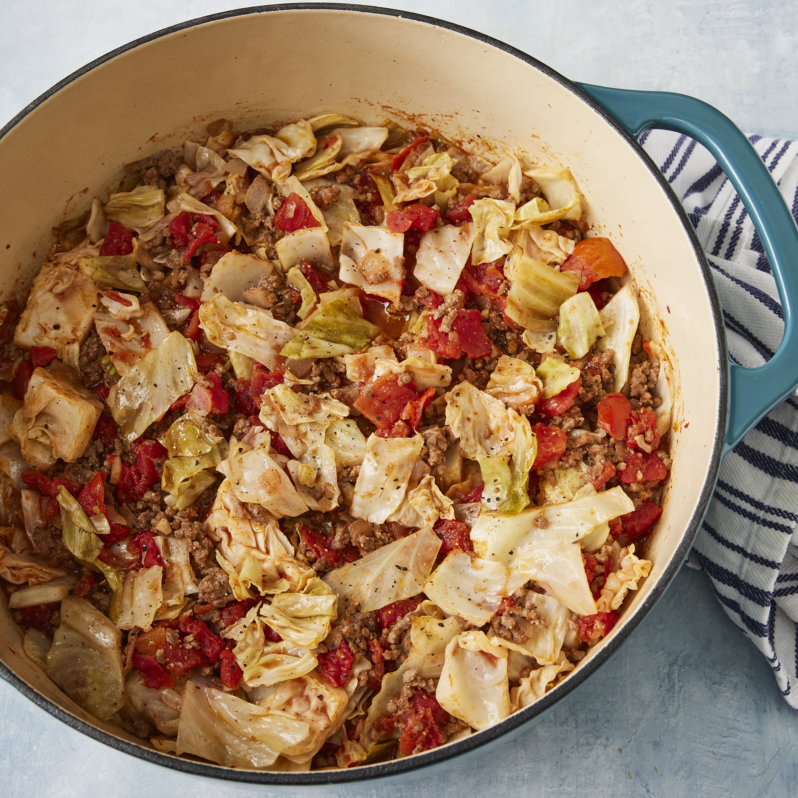

Main
Unstuffed Cabbage Roll Recipe

Unstuffed Cabbage Roll
This unstuffed cabbage roll recipe is an inexpensive, fast, and easy to make weeknight dish. Looking for a hearty meal that's just as good
the following day?
You will definitely want to add this tasty dinner to your recipe box.
An unstuffed cabbage roll is a deconstructed version of the traditional cabbage roll. All the same ingredients cooked together
— so you don't have to worry about pre-cooking and rolling the cabbage.
Though this recipe is good on it's own, you can serve
it over mashed potatoes or rice to bulk it up!
Ingredients
- 2 pounds ground beef
- 1 large onion, chopped
- 1 small head cabbage, chopped
- 2(14.5) cans diced tomatoes
- 1(8 ounce) can tomato sauce
- 1/2 cup water
- 2 cloves garlic, minced
- 2 teaspoons salt
- 1 teaspoon ground black pepper
Mashed potatoes or Rice (optional)
Directions
- In a large pot, cook ground beef and onion until brown and crumbly, 5 to 7 minutes. Drain and discard grease.
- Add cabbage, tomatoes, tomato sauce, water, garlic, salt, and pepper and bring to a boil. Cover pot, reduce heat, and simmer
until cabbage is tender, about 30 minutes.
- Serve while hot by itself or over mashed potatoes or rice!
This recipe was found here